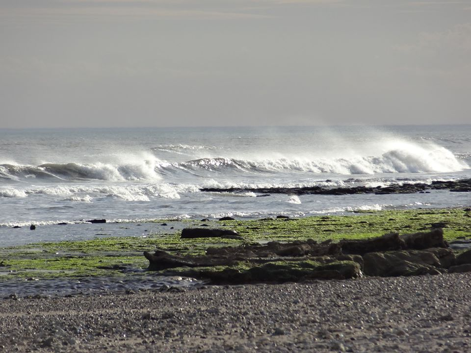

Origen
El surf en las costas de Necochea y Quequén tiene sus orígenes en las décadas de los 70 y 80. Los primeros surfistas locales empezaron a desafiar las frías costas con trajes de neoprene rudimentarios y tablas pesadas, descubriendo el potencial de las olas que rompen contra nuestras escolleras. Lo que empezó como la aventura de un grupo reducido de amigos, rápidamente sentó las bases para lo que hoy es una gran comunidad de surfistas que disfrutan de las olas y la cultura del surf en esta región.
